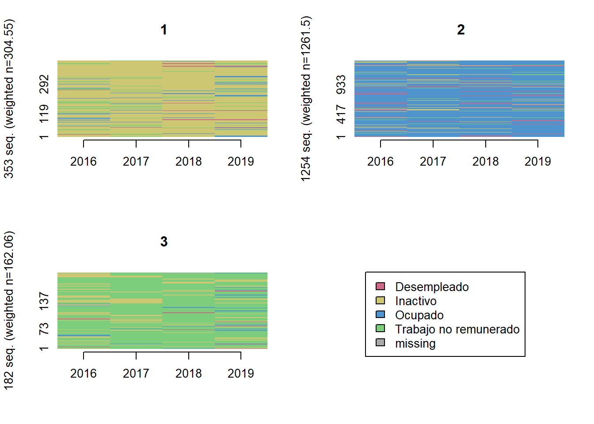
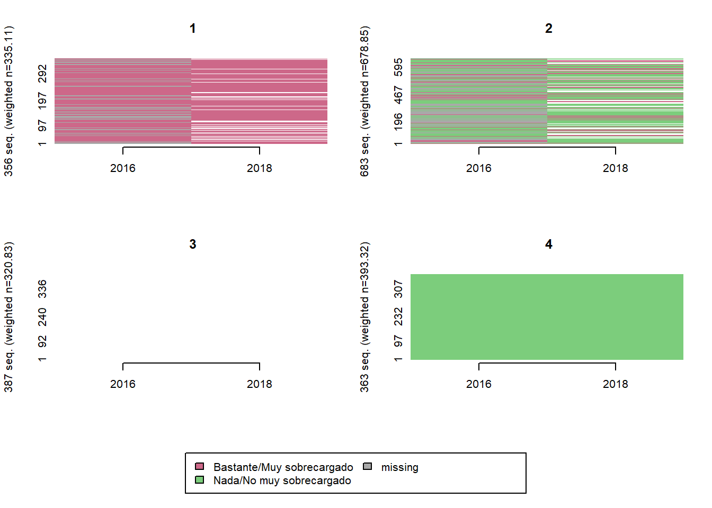
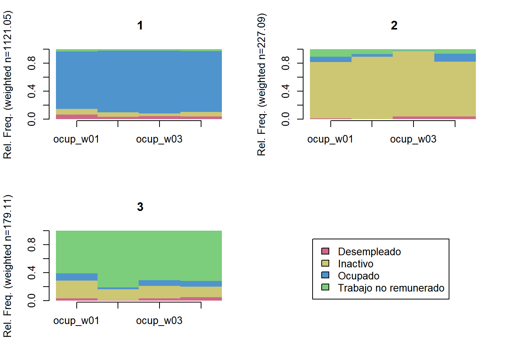
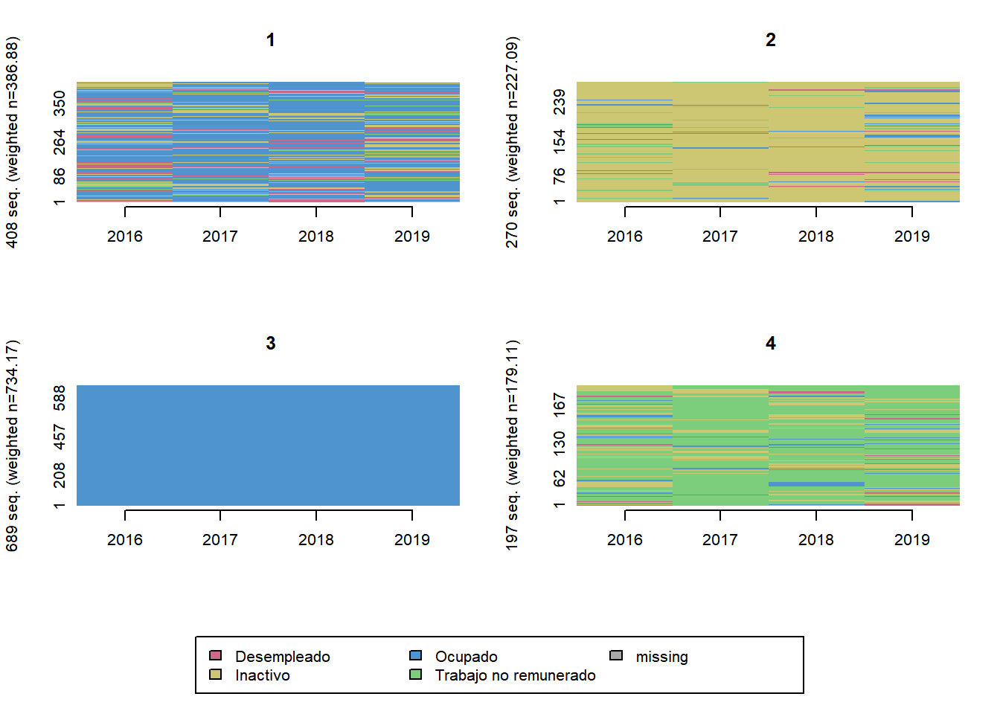
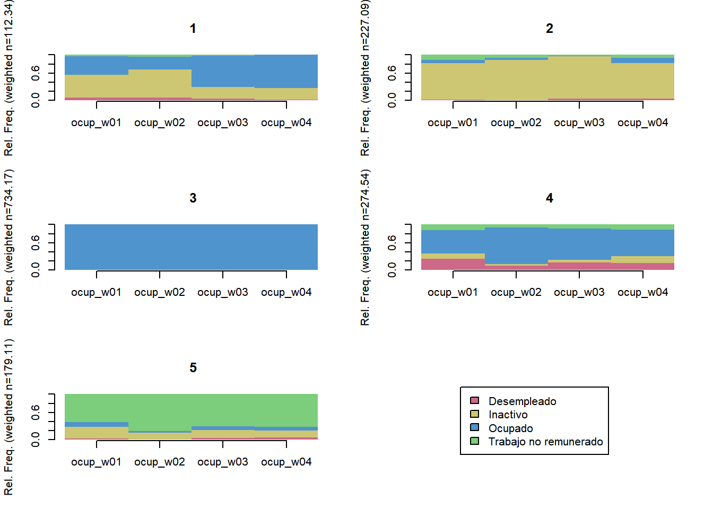
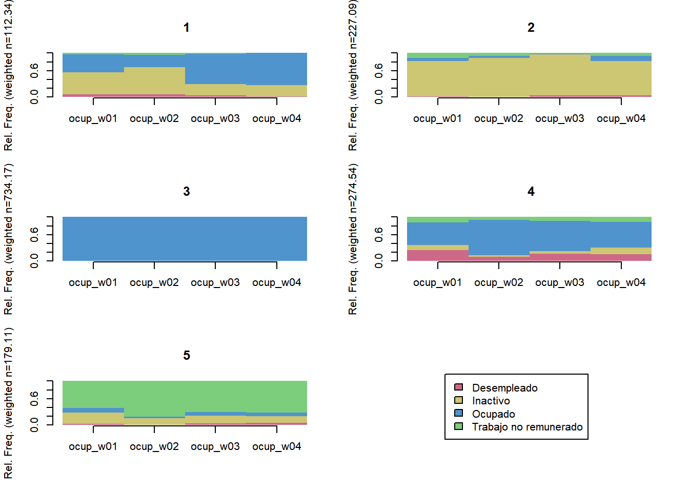
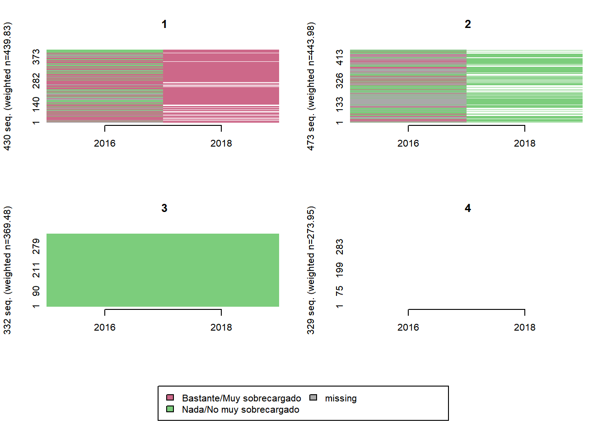
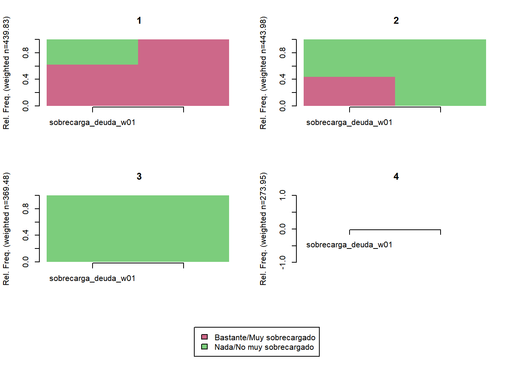
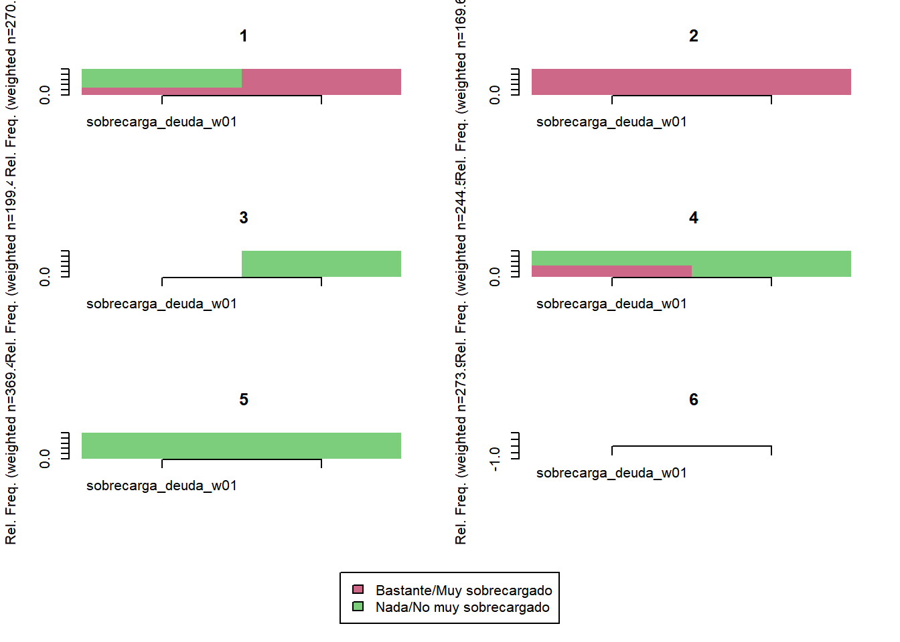
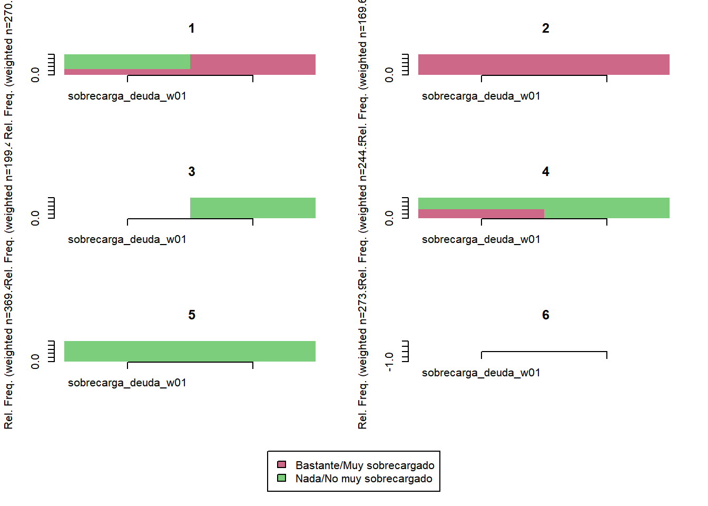

Capítulo 3 Trayectorias de variables independientes
3.1 Crear y agregar trayectorias de variables independientes
comparar_clusters <- function(.data, vars, K = 10) {
seq <- TraMineR::seqdef(.data,
var = vars,
weights = .data$ponderador02_w01)
dist <- TraMineR::seqdist(seq,
method = "LCS",
with.missing = TRUE)
ward <- cluster::agnes(dist, diss = TRUE, method = 'ward')
# Comparar soluciones con diferentes numeros de trayectorias (se prueban de 2 a 10 clusters)
ward.range <- WeightedCluster::as.clustrange(ward, diss = dist, ncluster = K)
# Visualizar clusters:
ward.range$stats %>%
mutate(clusters = 2:10) %>%
pivot_longer(cols = c(ASWw, HG, PBC, HC),
names_to = 'indicador',
values_to = 'value') %>%
group_by(indicador) %>%
mutate(value = (value - mean(value, na.rm = TRUE)) / sd(value, na.rm = TRUE)) %>%
ggplot(aes(y = value, x = clusters, color = indicador, group = indicador)) +
geom_line() +
scale_x_continuous(breaks = 2:10) +
ylab('Valor estandarizado')
}trayectoria <- function(.data, vars, K, olas = 2016:2019, MISSING = TRUE, ...) {
seq <- TraMineR::seqdef(.data,
var = vars,
...,
weights = .data$ponderador02_w01)
dist <- TraMineR::seqdist(seq,
method = "LCS",
with.missing = MISSING)
ward <- cluster::agnes(dist, diss = TRUE, method = 'ward')
TraMineR::seqIplot(seq, group = stats::cutree(ward, k = K),
border = NA,
space = 0, idxs = 0, xtlab = olas)
TraMineR::seqdplot(seq, group = stats::cutree(ward, k = K),
border = NA,
space = 0)
}Situacion ocupacional (4 categorias)
comparar_clusters(elsoc_salud_modelo,
vars = c('ocup_w01', 'ocup_w02', 'ocup_w03', 'ocup_w04'))
trayectoria(elsoc_salud_modelo,
vars = c('ocup_w01', 'ocup_w02', 'ocup_w03', 'ocup_w04'),
cpal = c('palevioletred3', 'khaki3', 'steelblue3', 'palegreen3'),
K = 3)
trayectoria(elsoc_salud_modelo,
vars = c('ocup_w01', 'ocup_w02', 'ocup_w03', 'ocup_w04'),
cpal = c('palevioletred3', 'khaki3', 'steelblue3', 'palegreen3'),
K = 5)
trayectoria(elsoc_salud_modelo,
vars = c('ocup_w01', 'ocup_w02', 'ocup_w03', 'ocup_w04'),
cpal = c('palevioletred3', 'khaki3', 'steelblue3', 'palegreen3'),
K = 6)

trayectoria(elsoc_salud_modelo,
vars = c('ocup_w01', 'ocup_w02', 'ocup_w03', 'ocup_w04'),
cpal = c('palevioletred3', 'khaki3', 'steelblue3', 'palegreen3'),
K = 7)# Agregar trayectoria de 6 clusters
seq <- TraMineR::seqdef(elsoc_salud_modelo,
var = c('ocup_w01', 'ocup_w02', 'ocup_w03', 'ocup_w04'),
weights = elsoc_salud_modelo$ponderador02_w01)
dist <- TraMineR::seqdist(seq,
method = "LCS",
with.missing = TRUE)
ward <- cluster::agnes(dist, diss = TRUE, method = 'ward')
elsoc_salud_modelo$trayectoria_ocup <- factor(stats::cutree(ward, k = 6),
levels = c(3, 1, 4, 2, 5, 6),
labels = c('Ocupados estables',
'Pasan de inactividad a ocupacion',
'Ocupados con periodos sin ocupacion',
'Mayoritariamente inactivos',
'Mayoritariamente trabajo no remunerado',
'Mayoritariamente desempleados'))Sobrecarga por deudas
comparar_clusters(elsoc_salud_modelo,
vars = c('sobrecarga_deuda_w01', 'sobrecarga_deuda_w03'))
trayectoria(elsoc_salud_modelo,
vars = c('sobrecarga_deuda_w01', 'sobrecarga_deuda_w03'),
olas = c(2016, 2018),
cpal = c('palevioletred3', 'palegreen3'),
K = 4)
trayectoria(elsoc_salud_modelo,
vars = c('sobrecarga_deuda_w01', 'sobrecarga_deuda_w03'),
olas = c(2016, 2018),
cpal = c('palevioletred3', 'palegreen3'),
K = 5)
trayectoria(elsoc_salud_modelo,
vars = c('sobrecarga_deuda_w01', 'sobrecarga_deuda_w03'),
olas = c(2016, 2018),
cpal = c('palevioletred3', 'palegreen3'),
K = 6) 

# Agregar trayectoria de 3 clusters
seq <- TraMineR::seqdef(elsoc_salud_modelo,
var = c('sobrecarga_deuda_w01', 'sobrecarga_deuda_w03'),
weights = elsoc_salud_modelo$ponderador02_w01)
dist <- TraMineR::seqdist(seq,
method = "LCS",
with.missing = TRUE)
ward <- cluster::agnes(dist, diss = TRUE, method = 'ward')
elsoc_salud_modelo$trayectoria_deuda <- factor(stats::cutree(ward, k = 5),
levels = c(4, 3, 1, 2),
labels = c('Nada/No muy sobrecargados deuda',
'Reduccion sobrecarga deuda',
'Aumento sobrecarga deuda',
'Bastante/muy sobrecargados deuda'))Actividad fisica regular
comparar_clusters(elsoc_salud_modelo,
vars = c('activ_fisica_w01', 'activ_fisica_w03'))
trayectoria(elsoc_salud_modelo,
vars = c('activ_fisica_w01', 'activ_fisica_w03'),
olas = c(2016, 2018),
cpal = c('palegreen3', 'palevioletred3'),
K = 2)
trayectoria(elsoc_salud_modelo,
vars = c('activ_fisica_w01', 'activ_fisica_w03'),
olas = c(2016, 2018),
cpal = c('palegreen3', 'palevioletred3'),
K = 4)trayectoria(elsoc_salud_modelo,
vars = c('activ_fisica_w01', 'activ_fisica_w03'),
olas = c(2016, 2018),
cpal = c('palegreen3', 'palevioletred3'),
K = 5) 

# Agregar trayectoria de 3 clusters
seq <- TraMineR::seqdef(elsoc_salud_modelo,
var = c('activ_fisica_w01', 'activ_fisica_w03'),
weights = elsoc_salud_modelo$ponderador02_w01)
dist <- TraMineR::seqdist(seq,
method = "LCS",
with.missing = TRUE)
ward <- cluster::agnes(dist, diss = TRUE, method = 'ward')
elsoc_salud_modelo$trayectoria_activ_fisica <- factor(stats::cutree(ward, k = 4),
levels = c(2, 3, 4, 1),
labels = c('Sin actividad fisica persistente',
'Abandonan actividad fisica en 2021',
'Se activan en 2021',
'Con actividad fisica persistente'))Apoyo social
comparar_clusters(elsoc_salud_modelo,
vars = c('apoyo_social_w01', 'apoyo_social_w03'))
trayectoria(elsoc_salud_modelo,
vars = c('apoyo_social_w01', 'apoyo_social_w03'),
cpal = c('palegreen3', 'palevioletred3', 'khaki3'),
olas = c(2016, 2018),
K = 4)
trayectoria(elsoc_salud_modelo,
vars = c('apoyo_social_w01', 'apoyo_social_w03'),
cpal = c('palegreen3', 'palevioletred3', 'khaki3'),
olas = c(2016, 2018),
K = 5)
# Agregar trayectoria de 3 clusters
seq <- TraMineR::seqdef(elsoc_salud_modelo,
var = c('apoyo_social_w01', 'apoyo_social_w03'),
weights = elsoc_salud_modelo$ponderador02_w01)
dist <- TraMineR::seqdist(seq,
method = "LCS",
with.missing = TRUE)
ward <- cluster::agnes(dist, diss = TRUE, method = 'ward')
elsoc_salud_modelo$trayectoria_apoyo_social <- factor(stats::cutree(ward, k = 5),
levels = c(5, 4, 2, 1, 3),
labels = c('Apoyo social estable',
'Apoyo social/decreciente',
'Apoyo social medio',
'Apoyo social cambiante',
'Sin apoyo social'))Salud subjetiva
comparar_clusters(elsoc_salud_modelo,
vars = c('salud_w01', 'salud_w02', 'salud_w03', 'salud_w04', 'salud_w05'))
trayectoria(elsoc_salud_modelo,
vars = c('salud_w01', 'salud_w02', 'salud_w03', 'salud_w04', 'salud_w05'),
cpal = c('palevioletred3', 'palegreen3', 'khaki3'),
K = 3)trayectoria(elsoc_salud_modelo,
vars = c('salud_w01', 'salud_w02', 'salud_w03', 'salud_w04', 'salud_w05'),
cpal = c('palevioletred3', 'palegreen3', 'khaki3'),
K = 4)trayectoria(elsoc_salud_modelo,
vars = c('salud_w01', 'salud_w02', 'salud_w03', 'salud_w04', 'salud_w05'),
cpal = c('palevioletred3', 'palegreen3', 'khaki3'),
K = 5)# Agregar trayectoria de 3 clusters
seq <- TraMineR::seqdef(elsoc_salud_modelo,
var = c('salud_w01', 'salud_w02', 'salud_w03', 'salud_w04', 'salud_w05'),
weights = elsoc_salud_modelo$ponderador02_w01)
dist <- TraMineR::seqdist(seq,
method = "LCS",
with.missing = TRUE)
ward <- cluster::agnes(dist, diss = TRUE, method = 'ward')
elsoc_salud_modelo$trayectoria_salud <- factor(stats::cutree(ward, k = 4),
levels = c(4, 3, 2, 1),
labels = c('Salud subjetiva muy buena',
'Salud subjetiva regular/muy buena',
'Salud subjetiva regular',
'Salud subjetiva mala/regular'))3.2 Guardar datos para usar despues
save(elsoc_salud_modelo,
file = file.path('..', 'inputs', 'datos_salud_modelo.RData'))library(tidyverse)
# Librerias graficos
library(ggpubr)
library(plotly)
library(ggstance)
# Libreria analisis estadístico
library(nnet)
library(modelsummary)
library(marginaleffects)